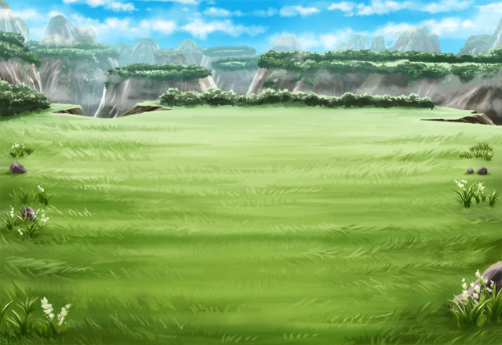

メア
お前の命を狙う私が現れるのは 愚かな人間でも予測できるだろう。
メア
それとも、それすらわからないほど、 お前は愚者ということか？
メア
あの人間なら、私が用意した カルの居場所に関する偽情報を見つけ
メア
以前は存在すら知らなかったので 予想外の邪魔をされてしまったが
メア
今度こそお前を助けてくれる者は 誰１人としていない。
メア
あらためてお前の命 奪わせてもらうとしよう。
メア
こう言えば、お前は罠とわかっていながらも 私の後を追ってくるのだろう？
メア
私が楽にお前を殺せるよう、 戦いを繰り返しながら進むのだな。
メア
弱ったお前が私の前に現れるのを 待っているぞ。